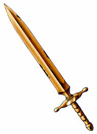
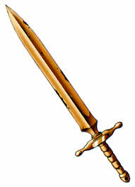
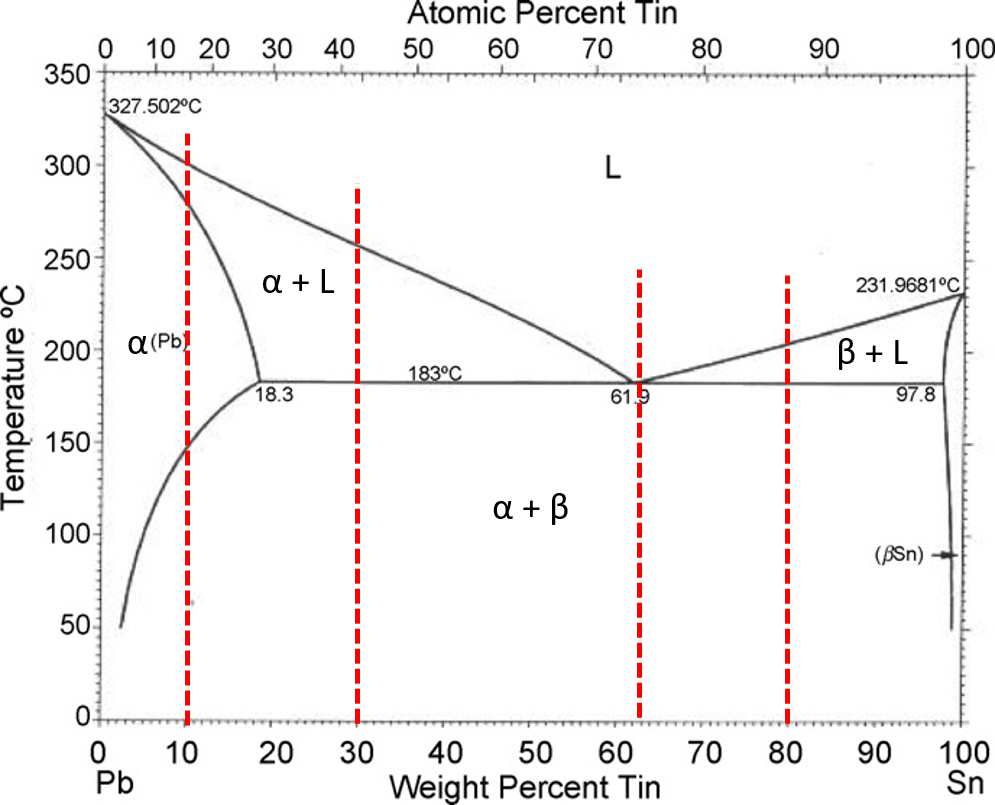

Practical Metallurgy
| If had to defend yourself from an unknown monster, what weapon would you choose? |
|
|  |  |
A Copper Sword |
A Hefty Stick |
| |
|
Making Phase Diagrams Fun
| If had to defend yourself from an unknown monster, what weapon would you choose? |
|
|  | |
A Copper Sword |
A Hefty Stick |
| |
|
In this exercise you can learn more about how the microstructure will change based on the composition, and the temperature. Choose a composition to get started with.
To read this diagram, on the far left the metal is pure lead (Pb) as as you move farther right on the graph more and more tin (Sn) is added. Depending on the amount of tin added the properties of the metal will change like its strength and melting point. The amount of tin added is read as 10% wt Sn and the number changes for how much tin is added.
The graph is separated into different sections by the black lines. The top area labeled L is when the metal is fully liquid. The section labeled alpha is solid lead. The section labeled apha+L is where the metal is partly liquid and partly solid lead, while the area L+beta is partly liquid and partly solid tin. The last lower section is alpha + beta and it is a mixture of solid tin and lead mixed together.
The red lines on the graph represent different major property transitions that can occur when moving from a high temperature to a low one at a specific composition. Pick a composition and temperature in the next section to see the microstructure of the metal at that point.
This microstructure shown above is when the metal starts as completely solid in the alpha phase. As the metal cools it enters the alpha + beta phase which is a solid mixture of both Pb and Sn. This is seen as the alpha in the green while the beta solid is seen in orange dots.
If you see any incorrect information or would like to add to the content of this webpage please reach out to us on Github. Here you can ask us a question or read the policy of adding additional content